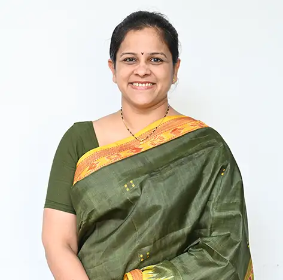

Dr. Anjali Ajit Sane
Dean - School of Economics and Commerce

Dean - School of Economics and Commerce
An accomplished teacher with over 20 years of experience in the areas of Economics and Banking, Dr. Anjali Sane is also a capable administrator. In addition to academic administration, her research areas include Managerial Economics, Micro and Macro Economics and various areas in international business. A dedicated and sincere teacher, she is known for use of practical examples and case studies to supplement classroom learning. Apart from pursuing research in her domain areas, she is also involved in interdisciplinary areas of research such as higher education, financial literacy and so on. She has completed Minor Research Project in the area of Financial Literacy with grant from Board of College and University Development (BCUD), Savitribai Phule Pune University. Dr. Anjali Sane prefers to use a combination of quantitative and qualitative research tools while using exploratory research methodology. She has published more than 20 research papers in peer reviewed management journals of repute as well as in conference proceedings of national and international seminars and conferences. She has co-authored 3 books on Business Economics (Micro), 1 book each on Analysis of Financial Statements and Business Economics (Macro). Dr. Anjali Sane has been awarded with the “Ideal Teacher Award” by MAEER’s MIT Group of Institutions and also as the “Super Achiever in the field of Education” from Kaveri Group of Institutions, Pune. She was also recognized as Research fellow at Centre for International Trade and Business in Asia (CITBA) at James Cook University, Australia. She has also received the “Best Paper” award for during the International Conference on Innovation in Business, Trade and Commerce in March 2022 and March 2023. She is recognized as the Member of Academic Council at H. L. College of Commerce, Ahmedabad, and as Member of Faculty of Commerce and Management at the DY Patil University, Pune.
Financial Literacy, Banking
Profiles